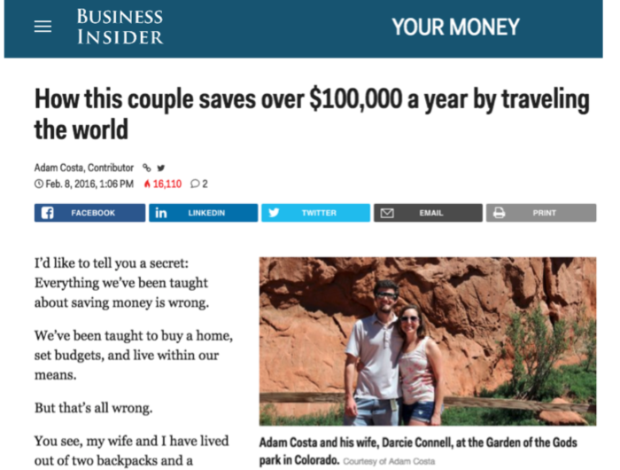

Financial freedom · Part 2
Chapter 5: Live rent-free—or, how to save $100k by traveling the world

How to live like a king, on a budget for bums
As we learned in the previous section, housing is the number one expense. So let's start there.
In this chapter, we'll review several ways to slash—or even eliminate—your housing costs.
(Before we begin, however, take note: while these strategies work for most people, they're especially powerful if you work remotely. As you free up your location, you open up more opportunities.)
House-sitting: a simple way to travel the world, live like a local, and stay in beautiful homes—for free
If you're looking to slash your expenses and turbocharge your savings, then house-sitting may be your single biggest opportunity.
Here's why: you live for free. No rent. No mortgage. No utilities. And, in exchange, you care for someone's home and pets as if they were your own.
If you're unfamiliar with house-sitting, it's a simple process. Homeowners need someone (i.e. you) to look after their home and pets while they're away. They might be going on vacation, family emergency, or an extended work assignment. Because of this, you can stay in their home—for free.
House-sitting is a win-win: Homeowners gain peace of mind, knowing someone will care for their home and pets while they're away; house sitters get to travel, make new friends, and save money.
Since discovering house-sitting five years ago, my wife and I have enjoyed dozens of house-sits around the world, including:
- England
- Morocco
- Vancouver, Canada (and other spots in British Columbia)
- Ashland, Oregon
- Denver, Colorado
- Sonoma, California
At first, we took assignments between two weeks and three months. But we soon transitioned to long-term assignments—ranging from three to six months—because it was easier to balance work and travel.
Regardless of how long you travel, you'll save a lot of money. When we lived in California, we paid about $2,500 for rent, plus monthly expenses like Wi-Fi, utilities, and garbage.
By comparison, house-sitting lets us travel the world, make new friends, and save roughly $30,000 a year. After house sitting nearly full-time for four years, we saved over $100,000, an amount that—according to the 4% rule—is worth $4,000 a year in passive income for life.
Let that sink in.
For every year we house-sat—living in beautiful homes in Vancouver, Denver, Morocco, the English countryside and beyond—we effortlessly saved $30,000, and then, by investing it, will now enjoy a $1,200 passive income stream, per year, for life. Not bad.
As you've seen from our experience, house-sits are available around the world. The most common areas are:
- Europe (especially England)
- Canada
- United States
- Australia
- New Zealand
Right now, as I glance through a few house-sitting sites, I see there are over well over 1,000 house-sits available worldwide. The world is your oyster.
What are you expected to do? You'll check the mail, water plants, and keep an eye on the place. If there are pets—and most likely there are—you'll give them food, medicine (if needed), and, of course, a lot of love.
How to get started with house sitting
Step 1. Sign up on house-sitting websites. TrustedHousesitters and HouseCarers are the two we use.
Step 2. Fill out your profile. Include references—start with friends, family, and coworkers—and an in-depth bio (adding a quick video is best). Although experience is preferred, many homeowners happily accept first-time house sitters with plenty of references. (Pro tip: many homeowners—myself included—choose sitters that remind them of themselves. Remember this as you create your profile.)
Step 3. Apply to house sits (but only if you're truly interested). Homeowners get their pick of the litter; therefore, it pays to stand out. To stand out, you'll need to put in the extra effort. And since you're putting in extra effort, it pays to be selective about which house sits you apply for.
Here's an example of what we send to homeowners:
SUBJECT: We would LOVE to care for your cats and home…
Hi [NAME],
- We're Darcie and Adam and, to be honest, your two cats, Snuggles and Mr. Kitty Pants, are adorable! We've always wanted a Calico cat; their colors are amazing. And your pics really show their character: Snuggles is obviously a laid-back, snuggly cat, while Mr. Kitty Pants looks like a real character!*
In addition to our profile, here are several reasons we’re a good fit for your assignment:
- We’re professional house and pet sitters and take our jobs very seriously. It’s our way of life and would do nothing to compromise your home, pets, or our future house-sitting assignments.
- We have around 30 references (and counting), making us one of the most highly trusted sitters on the site.
- We’re both business professionals and work remotely—so we can care for your home, and pets, all day. Both of us are business consultants and run several sites such as X, Y, and Z. There is more info about us on these sites as well.
- We’re extremely clean (almost to a fault) and will leave your place immaculate. Plus, we love to bake and will have goodies upon your return!
So what do you say? Shall we schedule a Skype call to meet and discuss the assignment? What are a few dates/times that work best for you? We’re currently in California and are in the PST.
Oh, just one more thing before we proceed…
Do you have WiFi and is it reliable? As mentioned, we both work from home so having reliable and fast internet is a must-have.
Again, it’s a pleasure to meet you and we look forward to chatting soon,
Darcie and Adam
Cell: xxx-xxx-xxxx
Skype: skype.name
Above is an example of what we send to homeowners. Notice how we:
- Build rapport in the first paragraph to connect with the homeowner.
- Name their pets—including a brief line about each.
- Explain why homeowners trust us. (The rest of the message is a template you can re-use.)
With this approach, you should hear from a few homeowners. If not, don't fret: house-sitting is a numbers game. Improve your profile as you go, keep contacting homeowners, and eventually, you'll hear from them.
Step 4. Schedule a video call to discuss the house sit. A video call is vital for both you and the homeowner; it allows you to get a sense for each other before you fly halfway around the world to stay in a stranger's home. Here are a few questions you should ask on the call:
- Have you used a house sitter before? If so, what went well/what didn’t?
- Where are you traveling and for how long?
- What’s the best way (and how often) would you like me to check in with you?
- Would you like me to check the mail? Or simply forward to you?
- How would you like me to relay phone messages?
- Do you have plants that need watering? If yes, can you describe your watering routine?
- Are their local contacts (neighbors, family members, etc.) in case of an emergency?
If everything looks good, you'll agree on the dates—and you're off to your first house sit!
In summary, house sitting is a great way to travel the world, live like a local, and save tens of thousands of dollars a year if you go full-time (which is easier if you work remotely). And remember: at the very least, you can use house sitting to score free vacations around the world!
Travel to cool places—and save big
Travel is good for the soul, keeps you young, and—when done properly—saves you piles of cash. When my wife and I married, we hit the road for nine months and traveled through Southeast Asia, India, and Nepal. Over nine months (in 2008), our budget was $50/day, all-inclusive. You could do something similar.
The world is full of interesting places. Some are expensive; others are cheap. As you work toward financial freedom, focus on cheap destinations first. Antarctica can wait.
The cheapest destinations tend to be in Southeast Asia, followed by Latin America. There are deals everywhere—Lisbon and Budapest in Europe are great examples—but for the biggest bang for your buck, consider the following destinations:
- Chiang Mai, Thailand
- Bali, Indonesia
- Cozumel, Mexico (if you love scuba diving)
- Oaxaca, Mexico
- Antigua, Guatemala
- Lima, Peru
- Buenos Aires, Argentina
The above is just my personal list. For hours of entertainment, use Nomad List or The Earth Awaits to find cool places around the world, with a low cost-of-living.
Another option: use Remote Year. According to their site:
"Remote Year brings together groups of inspiring professionals to travel, live, and work remotely in different cities around the world for a year or four months."
It's a surprisingly good value. For example, you can live in 12 different cities in 12 different months for ~$2,500 per person. (This includes housing and transportation; food, drinks, and entertainment are up to you.)
If you're a U.S. citizen working remotely, this trip could be free (or, at the very least, subsidized) if you use the Foreign Earned Income Exclusion, a topic we'll cover briefly in this section, and in greater detail in the tax section.
Eliminate your state income taxes—by moving
If you currently live in a state that charges high state taxes (I'm looking at you, California and New York), then move somewhere with no state tax.
Alaska, Florida, Nevada, South Dakota, Texas, Washington and Wyoming do not have state tax. (New Hampshire and Tennessee don't tax earned income (i.e. your job), though they do charge tax on dividends and income from investments.)
The savings can be huge. By moving from California to Washington state, our tax savings pay our mortgage; making the house, in a sense, completely free. Which is nice.
There is much more to this strategy, which we'll cover in the reduce your taxes section.
For US citizens: move to another country for at least 11 months—and save big on taxes
This one's a doozy. When you leave the US for 330 out of 365 days each year you qualify for the Foreign Earned Income Exclusion—which allows you to write off over $100,000 per year in income (and $200,000 if you're married filing jointly).
While this is considered a tax savings, it can also more than pay for your housing expenses, while you enjoy the good life and get to experience other cultures. (Note: you can read more about the FEIE in the tax section.)
Home exchange
If you already have a home, then this is a no-brainer. Sign up for a home exchange program to vacation for free. Home Exchange makes this easy. And the beauty is that you can let people stay at your home while your away, and then stay at someone else's home months—or even years—later thanks to their program.
A few other ideas to save money while seeing the world
The following is a mish-mash of ideas to help you travel more, and spend less. Although they're not as impactful as the main strategies, the following could be lot of fun.
You could:
- Build a tiny house (or rent one).
- Buy an RV and live in it. Buy it used as the re-sale value will hold on longer.
- Become a camp host. This works especially well if you already have an RV. Not really my style, but I know people who've done this and were able to save grips of cash.
- Get seasonal work which provides housing (e.g. work at a National Park, ski lodge, or aboard a ship).
- Hike the Appalachian Trail (or other long hikes). You can stop along the way and work as needed, or enjoy this while taking time off.
- Do long-term volunteer work at National Parks.
- Become a scuba dive instructor in Thailand or Bali.
- Teach yoga at an international retreat.
Increase your savings even more—by combining several strategies
Now that you know several strategies to reduce your housing expenses—house-sitting, moving to a state without an income tax, traveling somewhere cheaper, using the Foreign Earned Income Exclusion, leveraging home exchanges, house-hacking, and many more—combine them to create a smorgasbord of savings.
For example, if you are a U.S. citizen, you can:
- Change your domicile state to one without a state income tax, then...
- House-sit for 12 months outside the U.S., which allows you to...
- Claim the Foreign Earned Income Exclusion.
By combining these three strategies, you can easily save more than $20,000 each year—or more, if your income is high.
Now, obviously, I don't know your personal situation. So, let's plug in some numbers by answering the questions below:
- How much do you spend per month on housing? (Include rent, utilities, WiFi, etc.)
- What is your annual pre-tax income?
- What state do you live?
Armed with these answers, you can see how much you can save.
For example, let's say Fred lives in California, pays $1,500/mo in rent, and makes the average California income: $71,000.
Here's Fred's situation:
- $1,500/mo in housing expenses
- $71,000 annual income
- Lives in California
Based on the above, we see right away that Fred will save $1,500/mo by house sitting.
Then, we plug in the $71,000 into the Tax Form Calculator and select "California."
According to the site, Fred will owe:
- Federal tax: $8,794.50
- State tax: $3,329.14
- Total tax: $12,123.64
Now that've got all the numbers, we see how much each strategy will save Fred each year. Check it out:
- House-sitting: $18,000
- Foreign Earned Income Exclusion: $8,794
- Changing domicile to tax-free state: $3,329
In Fred's case, house-sitting is the biggest win. By staying out of the U.S. for most of the year, he'll also save a sweet $8,794. And, while changing domiciles saves the smallest amount at $3,329, it's also the easiest to maintain—it's "one-and-done."
In conclusion, you've learned strategies to cut—or even eliminate—your housing costs. You've also learned how to reduce taxes by embracing a more mobile lifestyle.
Use a single strategy, or, for greater results, combine them like in the example above. Regardless of which strategy (or strategies) you choose, you'll enjoy the same benefits: you'll explore the world—and live a life most only dream of—all while riding on the fast-track to financial freedom.
Enjoy the road. It's a trip.